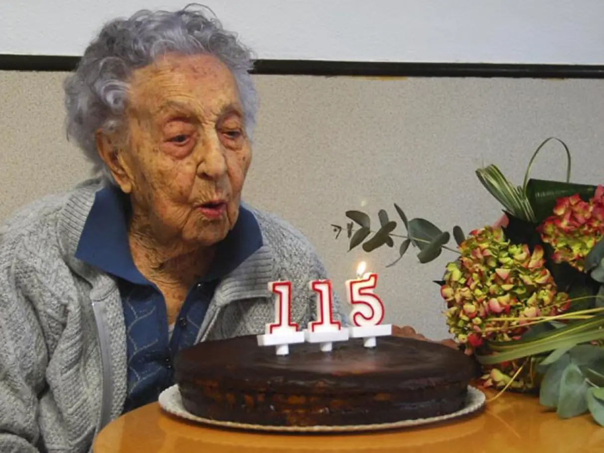

Morre a pessoa mais velha do mundo, aos 117 anos
Maria Branyas Morera vivia na Catalunha e morreu num lar para idosos onde morava há duas décadas

Maria Branyas Morera, a pessoa mais velha do mundo, morreu aos 117 anos
A pessoa mais velha do mundo, Maria Branyas Morera, morreu aos 117 anos, conforme anunciou sua família nas redes sociais.
O Guinness World Records também emitiu um comunicado confirmando sua morte aos 117 anos e 168 dias, tornando-a a oitava pessoa a atingir a idade mais velha verificada na história.
“Mary faleceu pacificamente no lar de idosos na Catalunha, Espanha, onde residiu durante duas décadas”, afirmou o comunicado do Guinness World Records, que acrescentou que ela morreu na segunda-feira (19).
Nesta terça-feira (20), a família de Morera publicou um post em sua conta X anunciando sua morte.
“Ela saiu como queria: dormindo, em paz e sem dor”, dizia o post.
Sua família acrescentou que Morera lhes disse pouco antes de sua morte: “Não sei quando, mas muito em breve esta longa jornada chegará ao fim, sorridente, livre e satisfeita”.